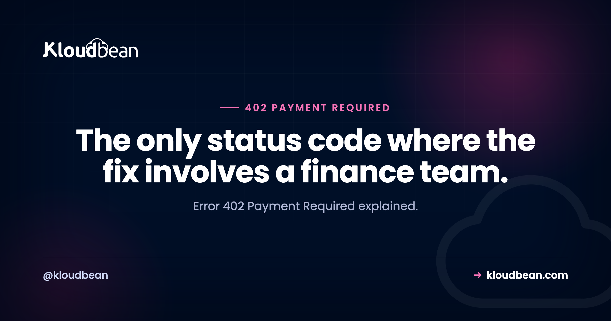

Error 402 Payment Required: Page Billing, Not On-Call

402 Payment Required sat unused for most of HTTP's life. The specification reserved it and almost nothing sent it, so it turns up in status code tables with a note saying reserved for future use. That note is now out of date. Metered APIs, usage-based platforms, and services with plan limits do send it, and when you receive one it carries a specific and slightly unusual message: nothing is broken, your credentials are fine, your request was correct, and the answer is still no until somebody pays for something. It is the one 4xx your engineers genuinely cannot fix.
An API is refusing your request for a commercial reason rather than a technical one: a failed payment, an exhausted quota, an expired trial, or a feature that requires a higher plan. Read the response body, since services that send 402 usually explain which limit you hit. Do not retry, because the same request will fail identically until the billing condition changes. And if a 402 appears in production, route the alert to whoever can authorise payment rather than to engineering.
402 against its neighbours
The distinction matters because it determines who can resolve it and whether waiting helps.
| Code | Means | Does retrying help? | Who fixes it |
|---|---|---|---|
| 401 | We do not know who you are | Not until credentials are fixed | Engineering |
| 403 | We know you, and no | No | Whoever grants permissions |
| 402 | We know you, and not until you pay | No, but upgrading works | Billing |
| 429 | You are going too fast | Yes, after waiting | Engineering, with backoff |
The pair worth separating carefully is 402 and 429, because both are about limits and they behave in opposite ways. A 429 is a rate limit: wait and the same request succeeds. A 402 is a quota or commercial limit: wait as long as you like and nothing changes. If your retry logic treats them the same, you will hammer an endpoint that has already told you the answer, which on some platforms is itself a violation of the terms you are trying to keep.
Our 429 guide covers backoff and jitter for the case where retrying is correct. This is the case where it is not.
What actually causes one
Five situations, and the body usually tells you which:
A failed payment method. A card expired, a bank declined a renewal, an invoice went unpaid. Often the account still works partially, with writes refused and reads permitted, which produces a confusing half-broken state.
An exhausted quota. You have used your allowance of requests, emails, minutes, or storage for the period. Distinct from rate limiting: you have not gone too fast, you have used up the total.
An expired trial. Everything worked in development because the trial covered it. It stops on a date that has nothing to do with your deployment schedule, which is why this often surfaces as a mysterious production failure with no accompanying change.
A feature above your plan. The endpoint exists and is documented, and your tier does not include it. Some APIs return 403 for this instead, which is also defensible; 402 is more informative because it tells you the barrier is commercial rather than a permissions error you might fix in a dashboard.
A spend cap you set yourself. Worth checking before contacting anyone. Many platforms let you cap monthly spend, and hitting your own ceiling looks identical to a billing problem.
curl -sS -X POST https://api.example.com/v1/messages \
-H "Authorization: Bearer $TOKEN" \
-H 'Content-Type: application/json' \
-d '{"to":"+10000000000","body":"test"}' \
-w '\nHTTP %{http_code}\n' | python3 -m json.toolA well-built 402 body looks something like this, and if you are building the API this is the shape to copy:
{
"error": "quota_exceeded",
"message": "Monthly message quota reached for the Starter plan.",
"limit": 10000,
"used": 10000,
"resets_at": "2026-09-01T00:00:00Z",
"upgrade_url": "https://example.com/billing"
}Naming the limit, the current usage, when it resets, and where to resolve it turns a dead end into a decision. A bare 402 with no body is close to useless, since the receiver cannot tell whether to wait until next month, upgrade a plan, or fix a card.
The operational point: a 402 is a business event
This is the part worth taking away, and it is a monitoring argument rather than a coding one.
Most 4xx responses in your logs are noise or client bugs, so teams reasonably filter them out of alerting. A 402 filtered out with the rest is a problem, because it means a paid dependency has stopped working and nobody has been told. The failure mode is silence: password reset emails stop sending, SMS verification stops arriving, invoices stop generating, and your error rate barely moves because your code caught the exception and logged it politely.
So treat 402 as its own signal:
const res = await fetch(url, opts);
if (res.status === 402) {
const detail = await res.json().catch(() => ({}));
// Distinct alert, not a generic API failure
await alerts.billing('payment_required', {
provider: 'messaging',
detail,
endpoint: url,
});
// Degrade deliberately rather than failing silently
throw new BillingBlockedError(detail.message ?? 'Provider requires payment');
}Two things that code is doing. It routes the alert somewhere a person with a company card will see it, rather than to an on-call engineer who can do nothing about it at 3am. And it raises a distinct error type, so the surrounding code can degrade honestly, telling a user that a feature is temporarily unavailable rather than showing a generic failure or, worse, appearing to succeed.
My position on this: paging an engineer for a 402 is a small organisational failure. They will read the body, discover a card expired, and then have to find somebody in finance anyway. Routing it correctly the first time skips the whole escalation and starts with the person who can act.
If you are building an API that meters usage
Four things worth getting right, in rough order of how much they matter to whoever integrates with you.
Warn before you refuse. Send usage headers on every response so clients can see the wall approaching rather than hitting it. Something like a limit, a remaining count, and a reset timestamp, which is the same pattern rate-limited APIs use. A customer who can see they are at 90% will upgrade; one who discovers the limit by having production break will be annoyed even though you were entirely within your rights.
Distinguish quota from rate. Use 429 with Retry-After for going too fast, and 402 for having used up an allowance. Sending 429 for an exhausted monthly quota tells clients to retry, which wastes their capacity and yours for the rest of the month.
Decide what still works. Refusing writes while permitting reads is usually the kindest degradation, since it lets a customer see their data and export it while they resolve the payment. Refusing everything, including the endpoint that would tell them why, is a bad look.
Say when it resets. A quota that resets on the first of the month is a completely different situation from one that requires an upgrade, and the client cannot tell them apart without being told.
| Symptom | Likely cause | Action |
|---|---|---|
| Reads work, writes return 402 | Payment issue with partial degradation | Check the billing dashboard |
| Started on the first of the month | New period, unpaid invoice | Check the last payment |
| Started mid-month, volume was rising | Quota exhausted | Read resets_at, or upgrade |
| Worked in development, fails in production | Trial covered development | Check trial expiry |
| One endpoint only | Feature above your plan | Check plan inclusions |
| Stopped abruptly at a round number | Your own spend cap | Check your configured limit |
| Retries hammering the endpoint | 402 treated as transient | Stop retrying, alert instead |
| Feature quietly stopped working | 402 caught and logged, not alerted | Give 402 its own alert path |
The platform's share of the work
Honestly: almost nowhere, and it would be silly to pretend otherwise. A 402 comes from a third party's billing system, and no hosting choice changes it.
The one genuine connection is the operational pattern above. Outbound calls to paid providers are where 402s arrive, and the same discipline that handles them well also handles the rest: set timeouts so a slow provider cannot stall your requests, run the calls from background jobs so a failure does not take a page down with it, and keep provider credentials as per-application environment variables so a staging system is not spending production quota. That last one is a real cost, since a test suite running against a live provider is a fast way to reach a limit you did not budget for.
Those are covered properly in 504 Gateway Timeout, background jobs, and environment variables done right.

If error 402 Payment Required was the easy part
The code most often confused with this one, 429 Too Many Requests, where retrying is the correct response. On permissions rather than payment, 403 Forbidden and 401 Unauthorized. For the other deterministic failures you should not retry, 409 Conflict and 422 Unprocessable Entity. On outbound calls that need timeouts, 504 Gateway Timeout. And for keeping provider credentials separated, environment variables done right.
Deploys that tell you what broke.
Deploy from Git, watch the build output as it runs, and open the app error log when a process refuses to start. Managed processes restart on crash, and backups are automatic.
- ✓ Live build logs
- ✓ Deployment history
- ✓ Logs viewer
- ✓ Managed process restarts
- ✓ Automatic backups
- ✓ Git deploy
FAQ
What does error 402 Payment Required mean?
It means an API is refusing your request for a commercial reason rather than a technical one: a failed payment, an exhausted quota, an expired trial, or a feature that needs a higher plan. Your credentials are valid and your request was correct. Nothing in your code can resolve it, which makes it unusual among 4xx responses.
Is 402 a real HTTP status code?
Yes. It was reserved in the original specification and went largely unused for years, which is why older references describe it as reserved for future use. Metered and usage-based APIs now send it in practice, so treating it as theoretical is out of date.
What is the difference between 402 and 429?
Both concern limits and they behave oppositely. A 429 is a rate limit, so waiting and retrying succeeds. A 402 is a quota or commercial limit, so waiting changes nothing until the billing condition does. If your retry logic treats them the same, you will keep hammering an endpoint that has already given you its final answer.
Should I retry after a 402?
No. The condition is deterministic and will persist until somebody pays, upgrades, or the billing period rolls over. Instead of retrying, raise a distinct error and alert whoever can authorise payment. Retrying wastes your capacity and on some platforms counts against you.
Why do reads work but writes return 402?
Because many providers degrade partially rather than cutting you off entirely, permitting reads so you can still see and export your data while refusing operations that consume resources. It is a deliberate kindness that looks like an inconsistent bug. Check the billing dashboard rather than your code.
Who should be alerted when a 402 happens in production?
Whoever can authorise payment, not on-call engineering. An engineer paged for a 402 will read the response, discover an expired card, and then need to find somebody in finance anyway. Give 402 its own alert path so the first person notified is the one who can act.
Why did an integration start returning 402 with no deployment?
Because the trigger was a date or a usage total rather than a code change. A trial expired, an invoice went unpaid, a monthly quota filled, or your own spend cap was reached. Check when it began: the first of the month suggests billing, mid-month with rising volume suggests quota.
Should my API return 402 or 403 for a plan restriction?
Either is defensible, and 402 is more informative because it tells the client the barrier is commercial rather than a permission they might fix themselves. Whichever you choose, include a body naming the limit, current usage, when it resets, and where to resolve it. A bare 402 leaves the receiver unable to tell whether to wait or upgrade.